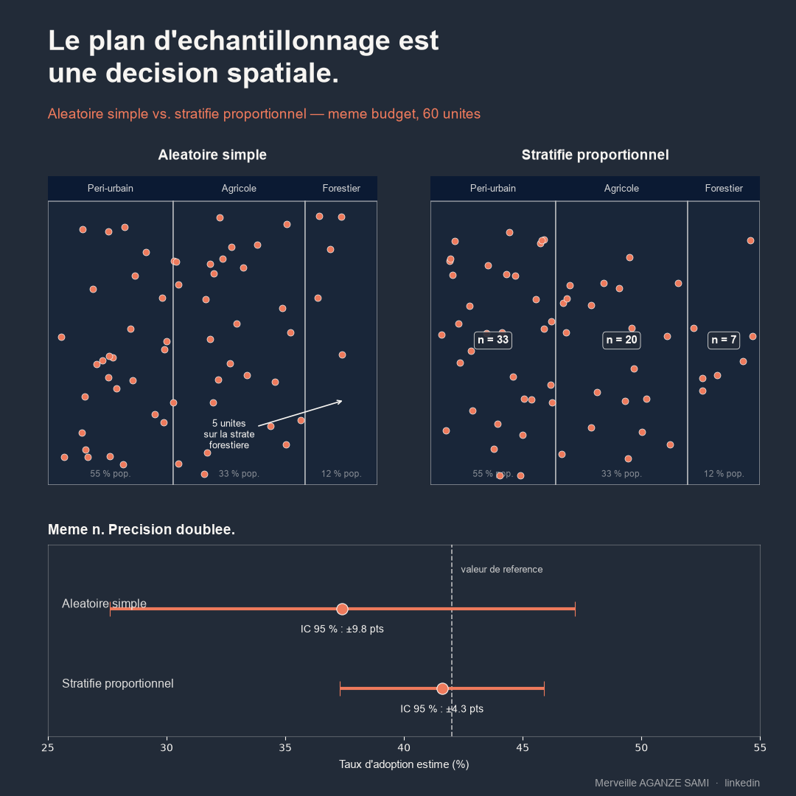

La conception d'un plan d'échantillonnage s'appuie fréquemment sur une liste d'unités administratives et sur un calcul de taille d'échantillon. Cette démarche traite le territoire comme une collection d'entités interchangeables. Or les zones d'intervention présentent le plus souvent une structure spatiale marquée — gradient écologique, contraste d'accessibilité, hétérogénéité de densité — qui influe directement sur la variable étudiée.
Le tirage aléatoire simple garantit l'absence de biais en espérance, c'est-à-dire en moyenne sur l'ensemble des tirages possibles. Il ne garantit pas, pour un tirage donné, une couverture équilibrée d'un territoire hétérogène. Une zone représentant une fraction minoritaire de la population peut se voir attribuer un effectif trop faible pour produire une estimation exploitable à ce niveau.
1. Ce qu'apporte la stratification
La stratification consiste à partitionner la population en sous-ensembles homogènes, puis à tirer indépendamment dans chacun. Sa propriété statistique est établie de longue date : la variance de l'estimateur stratifié ne dépend que de la variabilité à l'intérieur des strates, la variabilité entre strates étant éliminée par construction (Cochran, 1977).
Il en découle un critère de construction opérationnel : les strates doivent être définies selon les facteurs qui structurent réellement la variance de la variable d'intérêt. Une stratification sur la province administrative n'apporte rien si la variable dépend de l'accessibilité ou de la zone agro-écologique. Le gain de précision est proportionnel à la capacité du critère retenu à séparer des situations contrastées.
Le rôle du SIG dans la conception. Les couches géographiques disponibles — occupation du sol, réseau routier, densité de population, temps d'accès, zonage agro-écologique — fournissent des variables auxiliaires exploitables avant la collecte pour construire les strates. Le système d'information géographique intervient alors comme instrument de conception du plan, et non seulement comme outil de restitution cartographique des résultats (Wang et al., 2012).
2. Répartir l'effort entre les strates
Une fois les strates définies, la répartition de la taille d'échantillon relève d'un arbitrage explicite entre trois objectifs.
- 1Allocation proportionnelle. L'effectif de chaque strate est proportionnel à son poids dans la population. Ce choix est simple, donne des pondérations uniformes et convient lorsque la variabilité interne est comparable d'une strate à l'autre.
- 2Allocation optimale. L'effectif est proportionnel au produit du poids de la strate par son écart-type interne, ce qui minimise la variance globale à coût constant. Cette formulation, établie dès les travaux fondateurs sur la méthode représentative, suppose une estimation préalable des variances internes (Neyman, 1934).
- 3Allocation avec effectif plancher. Lorsque des estimations sont attendues strate par strate, un effectif minimal est imposé dans chacune, quitte à s'écarter de l'optimum global. Ce choix privilégie la désagrégation sur la précision de l'estimation nationale.
- 4Pondération à l'analyse. Toute allocation non proportionnelle impose l'usage de poids de sondage lors du calcul des estimations. Omettre cette étape produit une estimation biaisée.
3. Répartition dans l'espace à l'intérieur des strates
La stratification ne règle pas tout : à l'intérieur d'une strate, un tirage aléatoire peut concentrer les unités sur une portion du territoire. Des plans dits spatialement équilibrés répartissent les unités de façon plus régulière tout en conservant des probabilités d'inclusion connues, ce qui préserve la validité de l'inférence (Grafström & Tillé, 2013).
Ces approches sont particulièrement utiles lorsque la variable présente une structure spatiale continue : deux unités voisines apportant une information partiellement redondante, mieux vaut les éloigner.
4. L'écart entre plan théorique et collecte réelle
- Substitutions non tracées. Le remplacement d'une unité inaccessible par une autre, plus commode, modifie le plan sans que l'analyse en tienne compte. Chaque substitution doit être enregistrée avec son motif.
- Non-réponse différentielle. Lorsque les unités manquantes partagent une caractéristique liée à la variable étudiée — enclavement, éloignement d'un service — le biais introduit ne dépend pas seulement du taux de non-réponse mais de sa corrélation avec la variable d'intérêt (Groves, 2006).
- Base de sondage incomplète. Une liste de localités obsolète exclut d'emblée des unités de la population cible. Le croisement avec des données d'occupation du sol ou d'imagerie récente permet d'en repérer les principales lacunes.
- Effet de grappe. Concentrer plusieurs unités par village réduit les coûts mais aussi la quantité d'information effective. Cet effet doit être intégré au calcul de la taille d'échantillon plutôt que découvert au moment de l'analyse (Kish, 1965).
5. Documenter le plan
La valeur d'une estimation dépend de la traçabilité du plan qui l'a produite. Quatre éléments méritent de figurer dans la documentation d'enquête : le critère de stratification et sa justification, la règle d'allocation retenue, les probabilités d'inclusion et les poids qui en découlent, et le bilan de la collecte effective par strate — unités prévues, réalisées, substituées, non atteintes.
Ce dernier point est fréquemment omis alors qu'il conditionne l'interprétation. Un taux de réalisation homogène entre strates autorise une lecture directe ; un déficit concentré sur une strate spécifique appelle une mention explicite dans la présentation des résultats.
Points essentiels
- Le tirage aléatoire simple ne garantit pas la couverture d'un territoire hétérogène sur un tirage donné
- Les strates doivent reposer sur les facteurs qui structurent la variance, non sur le découpage administratif par défaut
- L'allocation arbitre entre précision globale et possibilité de désagréger par strate
- Toute allocation non proportionnelle impose une pondération à l'analyse
- Le bilan de collecte par strate fait partie intégrante de la documentation d'enquête
Le calcul de la taille d'échantillon détermine combien d'unités observer. La stratification géographique détermine lesquelles. La seconde décision pèse autant que la première sur ce que les données permettront de conclure.
Références
- Cochran, W. G. (1977). Sampling Techniques (3rd ed.). New York: John Wiley & Sons.
- Grafström, A., & Tillé, Y. (2013). Doubly balanced spatial sampling with spreading and restitution of auxiliary totals. Environmetrics, 24(2), 120–131. doi.org/10.1002/env.2194
- Groves, R. M. (2006). Nonresponse Rates and Nonresponse Bias in Household Surveys. Public Opinion Quarterly, 70(5), 646–675. doi.org/10.1093/poq/nfl033
- Kish, L. (1965). Survey Sampling. New York: John Wiley & Sons.
- Neyman, J. (1934). On the Two Different Aspects of the Representative Method. Journal of the Royal Statistical Society, 97(4), 558–625. doi.org/10.2307/2342192
- Wang, J.-F., Stein, A., Gao, B.-B., & Ge, Y. (2012). A review of spatial sampling. Spatial Statistics, 2, 1–14. doi.org/10.1016/j.spasta.2012.08.001

Merveille Aganze Sami
Conseillère MEL & Gestion de Bases de Données. Plus de 9 ans d'expérience en suivi-évaluation, SIG et digitalisation auprès d'organisations internationales (GIZ, Enabel) en RD Congo.
Un plan d'enquête à concevoir ?
Prendre contact